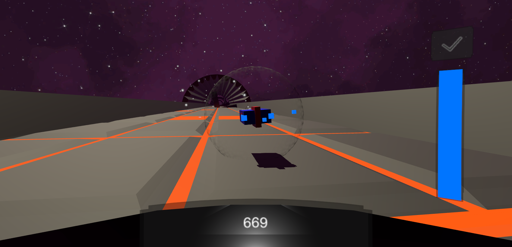
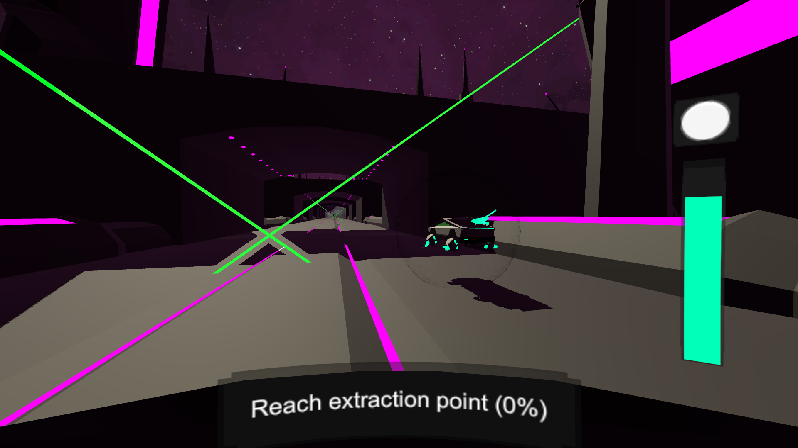
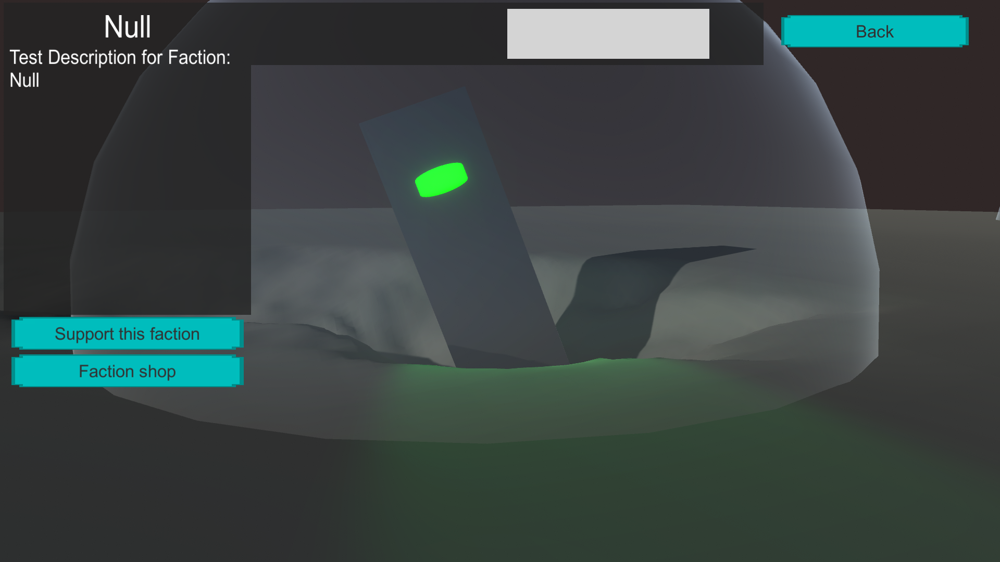

About the project
Frone started out as a project for my study at Alfa-College, after the project was done I continued working on the game with the goal of learning more about common game features that would usually not be made in school projects due to time constraints.
Some of the specific mechanics I wanted to learn more about were:
→ Item and Inventory systems.
→ Character customization.
→ Character selection and unique character abilities.
→ A shop system.
→ Saving and loading data.
The game itself is an endless runner, the player controls a hovercraft and has to dodge obstacles and other dangers.



Gameplay images.
Character customization
There are multiple hovercrafts in the game, some of them are unlocked from the start, while others have to be bought from different factions in the game.
In the Factions menu, the player can choose to support one of the factions, this earns the player reputation for that faction which can be used to buy new hovercrafts.
Hovercrafts have different stats and abilities, making each hovercraft a bit different in gameplay.

The faction menu of one of the factions.
The color scheme of each hovercraft can also be changed, by changing the Primary, Secondary, Details and Energy channels hovercrafts can be given a different look.


The same hovercraft with a different color scheme.
Code sample: color customization handling
The colors are stored in the drone settings class, each hovercraft has a settings class attached to it that stores the colors and wether the hovercraft has been unlocked by the player.
This class also has the function that applies the stored colors to the hovercraft, so the color picker will change the color variable and then call this function:
public void SetColors(GameObject ParentObj)
{
Transform[] AllChildren = ParentObj.GetComponentsInChildren(); //Gets all objects in the hovercraft object
foreach (Transform child in AllChildren)
{
if (child.GetComponent() != null)
{
Material RenderedMat = child.GetComponent().material;
switch (RenderedMat.name.Replace(" (Instance)", "")) //sets the right colors based on material name, other materials are ignored
{
case "DronePrimary":
RenderedMat.SetColor("_Color", PrimaryColor);
RenderedMat.SetColor("_EmissionColor", PrimaryColor);
break;
case "DroneSecondary":
RenderedMat.SetColor("_Color", SecondaryColor);
RenderedMat.SetColor("_EmissionColor", SecondaryColor);
break;
case "DroneDetails":
RenderedMat.SetColor("_Color", DetailsColor);
RenderedMat.SetColor("_EmissionColor", DetailsColor);
break;
case "DroneEnergy":
RenderedMat.SetColor("_Color", EnergyColor);
RenderedMat.SetColor("_EmissionColor", EnergyColor);
break;
}
if (child.GetComponent() != null) //if object has a TrailRenderer, change those colors too
{
foreach (Material mat in child.GetComponent().materials)
{
mat.SetColor("_Color", EnergyColor);
mat.SetColor("_EmissionColor", EnergyColor);
}
}
SetParticleColors(DroneParticles);
SetParticleColors(BoostParticles); //Also set colors for particle effects
if (!name.Contains("Frone_Dropship")) // also set these colors in the gamemanager so other scripts could easily access them, the script does not do this for dropship customisation, which uses the same system.
{
GameManager.Instance.CurrentPrimary = PrimaryColor;
GameManager.Instance.CurrentSecondary = SecondaryColor;
GameManager.Instance.CurrentDetails = DetailsColor;
GameManager.Instance.CurrentEnergy = EnergyColor;
}
}
}
}